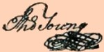

by
Stefan Bielinski
Dr. Thomas Young (1732-99) of the Hudson Valley, New England, and Philadelphia, lived in Albany during the mid-1760s. In 1766, his was the first signature on the constitution of the Albany Sons of Liberty. He was the older brother of Albany physician Dr. Joseph Young.
Thomas Young was born in New Windsor (then Ulster County) in February 1732. He was the oldest son of Scots-Irish immigrants John and Mary Crawford Young. The precocious child was apprenticed to a local physician and then began his own medical practice in Amenia, Dutchess County in 1753. Shortly thereafter, he married Mary P. Winegar of Connecticut. The marriage would produce two sons and four daughters. He was the Connecticut friend and mentor of Ethan Allen. He was a well-known Deist, a poet and writer, and liked to play the violin.
In 1760, he invested in a real estate venture in eastern New York promulgated by John Henry Lydius. Frustrated by the failure of that project, in 1764 he published an essay supporting Lydius's attempt to disseminate land more widely. Later, in October, he removed to Albany to further pursue that initiative and and establish a new medical practice. While in Albany, his son Rasman was baptized at the Lutheran Church.
Profoundly affected by the Stamp Act controversy, Young quit Albany and relocated to Boston in 1766. His ascent as a Revolutionary ideologue is well-documented in historical scholarship! In 1770, a correspondant of Sir William Johnson called him, "formerly of Albany . . . now the great hero for liberty."
Sick in Philadelphia, Dr. Thomas Young died on June 24, 1777. Following his death, his mother and widow removed to Albany to live with his brother, a politically active physician himself!

notes
 Sources: The life of Thomas Young is CAP biography number 6972. This profile is derived chiefly from family and community-based resources. The most interesting article on him is David Freeman Hawke, "Dr. Thomas Young - Eternal Fisher in Troubled Waters: Notes for a Biography," New-York Historical Society Quarterly 64:1 (January 1970), pp.7-29, and the sources cited therin.
Sources: The life of Thomas Young is CAP biography number 6972. This profile is derived chiefly from family and community-based resources. The most interesting article on him is David Freeman Hawke, "Dr. Thomas Young - Eternal Fisher in Troubled Waters: Notes for a Biography," New-York Historical Society Quarterly 64:1 (January 1970), pp.7-29, and the sources cited therin.
See Joseph Chew to Johnson, June 20, 1770 in Johnson Papers volume 12, p. 826.
first posted: 4/10/03